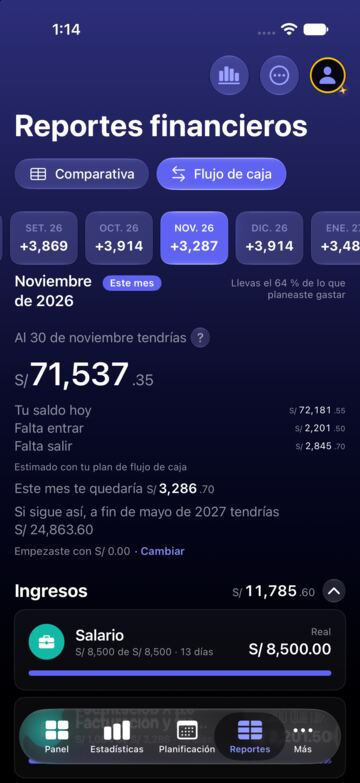
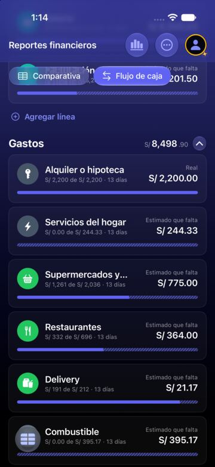
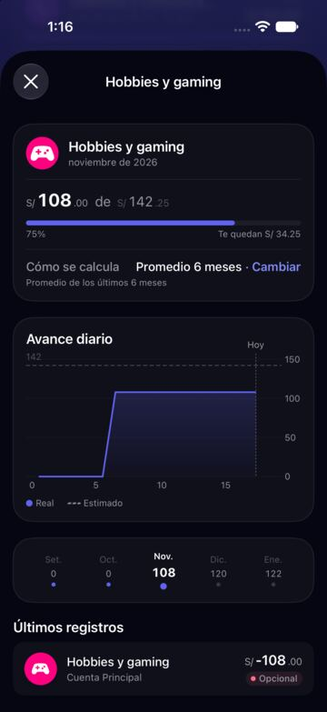
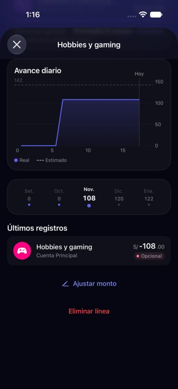
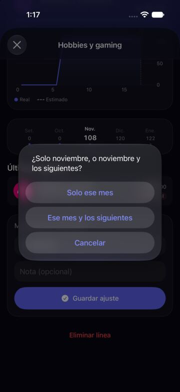
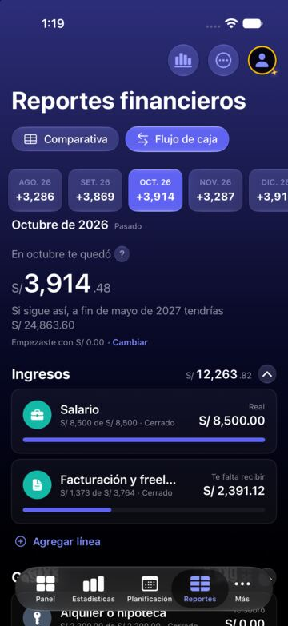
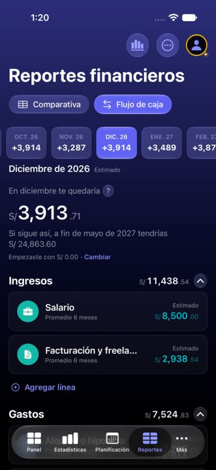
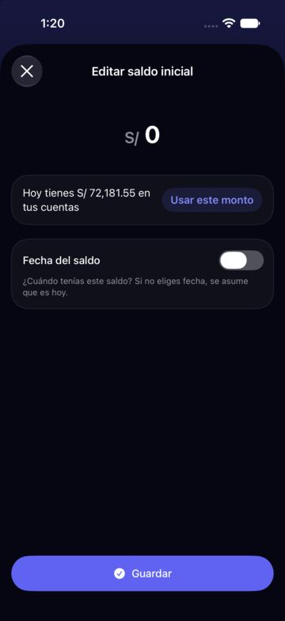

Tu sospecha era correcta en lo grueso. La pantalla del mes enseña tres cifras de «cómo acabo el mes» que salen de tres cuentas distintas, una de ellas parte de un saldo que se mueve solo y cuenta dos veces lo que ya pasó. La cifra grande («Al 30 tendrías») sí está bien hecha, pero hay casos medidos en los que castiga de más. Aquí van los números, cómo lo ves hoy, tres modelos para rehacerlo y un plan en seis sesiones.
Lo que tienes que decidir
Seis decisiones antes de tocar código
Marca una opción en cada una. Se guarda aquí y la próxima sesión la lee. La recomendada va marcada; si estás de acuerdo con todas, basta con «Todo lo recomendado».
Cargando tus respuestas…
Tus siete sensaciones
Qué dijiste y qué dicen los números
1
«No queda claro de dónde sale “falta salir”.»Confirmado Mezcla cuatro cosas sin decirlo: lo que falta de cada línea, tus pagos planificados, lo ya fechado por delante y un ritmo diario de lo que no tiene línea. La pantalla solo dice «Estimado con tu plan».
2
«¿Excedidas: proyectar o asumir lo excedido? No excedidas: el límite.»A medias «Al 30» ya hace lo que pides: excedida = lo real y nada más; no excedida = el límite. Pero el total del mes y «Este mes te quedaría» usan el límite también en la excedida: comida 1,380 gastado de 900 y el total sigue contando 900.
3
«¿Cómo se cambia el límite? ¿Para siempre?»Confirmado Con «Promedio 6 meses» el límite se mueve solo cada mes (Hobbies: 142 este mes, 120 en diciembre, 122 en enero). El cambio está al fondo de la hoja, pide el alcance después de escribir y no ofrece «todos los meses».
4
«El detalle de una línea es incompleto.»Confirmado Solo «Últimos registros» (5), sin ir a todos; el límite y su cambio no están arriba; no dice si lo fechado por delante ya cuenta.
5
«Ingresos y gastos: todos, tengan línea o no.»Confirmado Lo que no tiene categoría no existe para el plan (ni línea ni «Gastos no considerados»). Las devoluciones suman como gasto. En meses futuros lo que no tiene línea desaparece.
6
«Parte del saldo de hoy, que ya tiene los ingresos, y solo lo castiga con gastos.»Dos cosas distintas «Al 30» no cuenta el sueldo dos veces: parte de hoy y suma solo lo que falta. Pero sí castiga de más en dos casos medidos (+967 en el escenario 2). Y la frase «Si sigue así… tendrías» sí cuenta dos veces el mes en curso (+2,312.50 en el escenario 1).
7
«No es intuitivo.»Confirmado Cuatro cifras grandes en el mismo bloque, dos de ellas contradictorias con tu saldo (semilla: hoy 72,181 y «a fin de mayo tendrías 24,863»).
Hallazgos de cálculo
Lo medido, con números
Escenario 1: historia de 6 meses (sueldo 4,000; vivienda 1,500; comida 900; transporte 200; ocio 300; 100 sin categoría al mes). Noviembre al día 18: sueldo cobrado, comida excedida (1,100 + devolución de 80), transporte no excedido (50 + 10 USD = 37.50), 100 sin categoría, +250 sin categoría, +600 de freelance sin línea, −200 fechado el 28 y −150 de ocio fechado el 10 de diciembre. Plan creado hoy con lo sugerido y el saldo de hoy (13,517.50). Medido corriendo el código de la app.
Un mes explicado paso a paso
Noviembre del escenario 1, hoy y con el modelo recomendado
3,003.33 (límites fijos + mediana de lo sin línea)
Diciembre en «Ver proyectado» del Panel
3,214.58 (150 contados dos veces)
3,003.33 (la misma pieza)
Al 31 de diciembre tendrías
16,256.25
13,901.67
Con el modelo A, la cifra del mes, la frase de abajo y la cápsula dicen lo mismo: empezaste con 11,375, entraron 4,850, salen 3,320 (2,707.50 ya pasaron y 612.50 se estiman) y terminas con 12,905. La cifra grande de hoy no cambia: lo que cambia es que todo lo demás cuadra con ella.
Cómo lo ves hoy
Recorrido en el simulador, semilla «rendimiento»
Desliza para ver todas. Plan creado por la semilla con «Empezaste con S/ 0».

Cuatro cifras de fin de mes. «A fin de mayo tendrías 24,863» con 72,181 hoy.

Gastos 8,498: suma de lo planeado. Las cápsulas de arriba flotan sobre las filas.«Gastos no considerados» 559: sí entran en este mes, no en los siguientes.

Detalle de línea: el límite es un promedio que cambia cada mes.

142 hoy, 120 en diciembre, 122 en enero. Solo «Últimos registros».

El alcance se pregunta después de escribir. No hay «todos los meses».

Octubre, cerrado: «te quedó 3,914» con 2,391 de freelance que nunca llegaron.

Diciembre: sin «Gastos no considerados». Más optimista que noviembre.

«Si no eliges fecha, se asume que es hoy»: en realidad, el mes que estés viendo.
Tres modelos
Cómo podría calcularse un mes
A · Mes real + lo que falta Recomendado
B · Plan puro
C · Proyección automática
Idea
Lo que pasó es real; lo que falta, del plan. Igual que «Al 30» del Panel.
El mes es el plan entero; lo real solo se compara.
Yala proyecta sola por ritmo; tú solo marcas excepciones.
Real y proyectado
Barra sólida = real; rayada = estimado; cada cifra dice cuál es.
Todo es plan; lo real va al lado.
Todo estimado salvo el pasado.
Excedidas
Cuentan lo real y no se proyecta más (decisión P2).
Cuentan el límite: el exceso no mueve el saldo previsto.
Siguen al ritmo.
Sin línea
Lo real siempre (con o sin categoría, con signo). En el futuro, gastos por la mediana de 6 meses.
Solo si el usuario crea la línea.
Todo por ritmo.
Mes de inicio
Parte del saldo de hoy y suma solo lo que falta. Sin saldo inicial manual.
Parte del saldo al día 1 (hay que saberlo o calcularlo).
Saldo de hoy + ritmo.
Cambiar un límite
Hoja única: solo este mes, desde este mes o todos.
Igual.
No hay límites: solo excepciones.
Detalle de línea
Todos los registros, límite arriba, lo que falta y si sigue al ritmo.
Igual, sin «lo que falta».
Sin límite que gestionar.
Riesgo
Medio: un motor nuevo, pero ya existe la mitad («Al 30»).
Bajo, pero repite tu queja 2: el exceso no se ve en el saldo.
Alto: pierdes el control de tus límites; los gastos puntuales mueven todo.
Maquetas
Antes y después, con el modelo A
1 · El mes en curso
Hoy
Propuesta
Noviembre 2026Este mes · faltan 12 días
Al 30 de noviembre tendrías
S/ 12,905
Empezaste noviembre con11,375.00
Entró real+4,850.00
Salió real−2,707.50
Tienes hoy13,517.50
Falta salir estimado−612.50
Al 3012,905.00
Toca «Falta salir» para ver de dónde sale: 3 líneas con lo que les queda y 1 gasto ya fechado.
Comidaexcedida · +120
1,020 de 900 · no proyectamos más+200 fechado el 28
Transportequeda 112.50
87.50 real de 200límite desde oct.
Sin línea−100 · +850
Todo lo que no está en el plan, también sin categoría›
2 · El detalle de una línea
Hoy
Propuesta
Comida · noviembreexcedida
LímiteS/ 900 · Cambiar
Gastado1,020.00
Fechado por delante200.00
Lo que falta0.00
Si sigues a este ritmo, al 30 serían1,700
Registros del mes · 6Ver en Registros
28 nov · Mercado fechado−200.00
11 nov · Devolución+80.00
9 nov · Súper−300.00
6 nov · Súper−400.00
2 nov · Súper−400.00
6 meses: real y límite
jun · · · · · novlínea de 900
3 · Cambiar un límite
Hoy
Propuesta
Límite de Comida
Solo noviembreDesde noviembreTodos los meses
Monto al mes
S/ 1,000
Cambia noviembre y los meses siguientes. Octubre y antes se quedan con 900. Tu promedio de los últimos 6 meses es 900.
Puedes poner 0 si este mes no piensas gastar en esto.
Guardar
Qué más se mueve
Pantallas que leen estas proyecciones
Pantalla
Qué cifra toma
Con el modelo A
Panel · «Ver proyectado» y su «Al 30»
Lo que falta de cada línea del plan + ritmo de lo sin línea
Misma pieza que el mes en curso. Sin doble conteo de fechados; lo sin línea por mediana.
Estadísticas · Tendencias, curva proyectada
Lo mismo que el Panel
Igual que el Panel.
Widget de inicio · Saldo con proyección
Lo mismo, hasta fin de año
Igual; meses futuros con límites fijos.
Flujo de caja · gráficas, comentario de la IA, avisos
El saldo acumulado del plan
Cambian mucho: hoy parten del saldo inicial (S/ 0 en la semilla).
Yala IA, Observaciones, notificaciones
No usan el plan
Nada.
Plan de arreglo
Seis sesiones, una vista cada una
Orden: S1 → S2 → S4 → S3 → S5 → S6. S1 necesita P1, P2, P4, P5 y P6. Todo queda en el ticket del backlog «Flujo de caja: replanteo del modelo y de la vista».
S1
Motor del mesEsfuerzo alto Una cuenta por mes: real (todo, con signo, también sin categoría) + lo que falta por línea + lo sin línea por mediana. Mes en curso desde el saldo de hoy, pasados = real, futuros encadenan desde el cierre. Sin doble conteo de fechados, promedios sin el mes a medias. Paridad con el Panel y review adversarial (cálculo financiero).
S2
Detalle del mes y cápsulasMedio Una sola historia del mes, real y estimado distinguidos. Fuera las cuatro cifras y «Empezaste con S/ 0».
S3
Detalle de líneaMedio-alto Todos los registros del mes, límite arriba con «Cambiar», lo que falta y si sigue al ritmo, 6 meses contra el límite, aviso cuando el gasto está en la categoría madre sin subcategoría.
S4
Cambiar límiteMedio Hoja única con el alcance antes de escribir, admite 0, dice qué meses cambian. Retira la hoja vieja de configuración, que hoy no se abre desde ningún sitio.
S5
Crear el planBajo-medio Sin «¿Con cuánto empiezas?»; líneas por categoría por defecto; límites fijos sembrados con tu promedio.
S6
Panel, Tendencias y widgetMedio Los tres con la pieza de S1. Cierra el ticket del fechado contado dos veces.
Tickets que ya existían
Revisados
VigenteCon plan, un gasto ya fechado en un mes futuro se proyecta dos veces
Medido: diciembre proyecta 3,214.58 de gasto; 150 son el mismo movimiento dos veces (la línea de ocio entera + el fechado del 10). Se cierra con S1 y S6.
ObsoletoEl flujo de caja avanzado no limita a nadie
Ya decidiste (decisión 2 de 2.3: gratis entero) y el lote 08 retiró ese permiso; un test fija que no vuelva. Se puede cerrar. No lo moví: estaba fuera de lo que este encargo podía tocar.